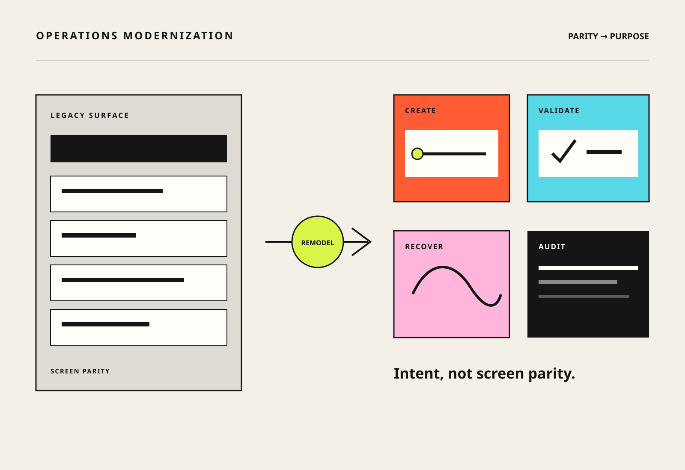

Business need
Retire without breaking trust
Cut repetitive entry and operational cost while keeping continuity, compliance, and precise recovery.
Case 04 · Systems · Operations · 2024–2026
I helped turn a critical legacy order-management surface into a modern, exception-led experience, defining what to keep, what to automate, how failures recover, and how every decision stays auditable.

Operations agents used a legacy order-entry and management surface, plus connected tools, to search, create, edit, validate, reject, submit, and audit licensing orders. A screen-for-screen rebuild would keep the manual toil. Removing too much would break high-consequence work.
Cut repetitive entry and operational cost while keeping continuity, compliance, and precise recovery.
Automation handles the predictable work, and people resolve understandable exceptions through precise manual paths.
I helped map legacy and future workflows and shaped the residual human capabilities, status, failure visibility, activity and audit concepts, and the parity-versus-automation decisions.
A three-day online immersion and field visit, with controlled crowdsourcing, agent show-and-tells, and observation, mapped agreement and order workflows, tool relationships, manual augmentation, and confidence in automation. The research team and operations agents produced the evidence, and I turned it into ordering and exception-design questions.
Immersion findings, workflow demonstrations, linked specifications, and work-item evidence explained the manual work and where trust broke down.
Every legacy capability got classified, so parity never meant duplication.
Modern capabilities for residual human work, and automation for repeatable, data-driven flows.
Batch and tenant outcomes, failure reasons, and precise manual reprocessing are visible to users.
One place shows what was checked, what failed, and who owns the next action, for validators and countersignatories.
The right unit of modernization is the enduring user job, not the legacy screen.
Preserve the jobs and controls while leaving behind historical implementation complexity.
High-precision identifiers serve action-led arrivals, and broad attributes live in filters.
Accepted, Pending, Review, Hold, Rejected, Invalid, and Partially Billed each get distinct controls, flags, comments, and view-only behavior.
One tenant never blocks all processing. Users get aggregate status and detailed recovery.
Validation outcomes, transitions, comments, and next ownership make correctness usable.
When authoritative reporting or an upstream fix is safer, skip the manual correction.
Designs shared with development and initial reviews complete, with development walkthroughs under way as of February 2026.
Designs shared with development, with walkthroughs and feasibility work active.
Status, details, actions, comments, validation, rejection, and audit behavior defined through specifications and review.
New scope reshaped the timing, with step-up, reconciliation, license-reduction, hold, and pending dependencies tracked into later releases.
A formal programme UAT ran April–May 2026 on early migrated capabilities, with test leads, auditors, validators, production-like examples, scripts, bug logging, triage, and daily status.
Planning figures put 8.3K non-package orders (up to 13% of volume), 5K mid-term orders, 68K package-based orders, and 4.5K orders of a further type in scope, with an anticipated +10% automation opportunity.
Analysis flagged about 210 of 2.5K extension orders (~8%) at risk of incorrect retrieval, which fed straight into the design.
Automation completion, exception rate, manual touches, processing time, correctness defects, invoice issues, support cases, recovery success, and UAT defect themes, by phase.